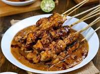
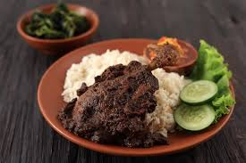
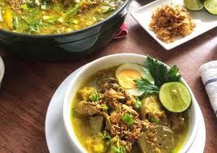
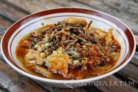
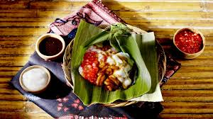

Eksplorasi perpaduan rempah legendaris, sajian laut segar, hingga jajanan manis warisan leluhur di Pulau Garam.

Ikon kuliner Madura yang mendunia. Potongan daging ayam empuk yang dibakar sempurna dengan siraman bumbu kacang kental, kecap manis, dan irisan jeruk nipis.

Bebek goreng dengan tekstur super empuk yang disajikan bersama bumbu rempah hitam khas Madura yang gurih, pedas, dan berminyak serta sambal pencit (mangga muda).

Kuah kaldu sapi bening kekuningan yang kaya rempah, berpadu dengan potongan daging sapi empuk, babat, dan telur rebus. Disantap hangat bersama perasan jeruk nipis.

Sajian berkuah kaldu manis gurih yang menggunakan *lorjuk* (kerang bambu endemik Madura). Dilengkapi dengan lontong, tauge, dan soun.

Bubur manis tradisional khas Bangkalan yang terdiri dari beberapa macam bubur (mutiara, sumsum, ketan hitam) yang disiram dengan kuah santan dan gula merah cair.